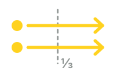

What each touch gesture does — on the home screen, the second home screen, the working screens, in menus, on the number pad and in windows.
The Hectare 5 has no buttons; every action is a gesture on the screen. Each screen listens only to its own gestures and ignores the rest. With “Buttons sound” set to “Yes”, every gesture the screen takes is confirmed with a click.
Kinds of touch
Gesture
How
Tap
One finger, touch and lift within half a second.
Touch and hold
One finger kept on one spot for more than half a second. The panel reacts while the finger is still down.
Double tap
Two quick taps with one finger.
Two-finger tap
One tap with two fingers at once.
Three-finger tap
One tap with three fingers at once.
Swipe
A short stroke of one finger across the screen.
Long swipe
A stroke of one finger across more than a third of the screen.

Two-finger swipe, long two-finger swipe
The same with two fingers.
Home screen
Gesture
What it does
Two-finger tap
Opens the main menu.
Touch and hold a device — icon or column
Opens its context menu.
Touch and hold a diagram, then swipe up or down
Lights the diagram's target and changes it, one step per swipe.
Tap outside the diagrams
Ends the change of a target.
Touch and hold a kg/ha indicator
Opens the number pad for that product's target rate.
Touch and hold an empty place of the right-hand column
Locks or unlocks product application. One short beep confirms. Machines with dispenser motors or a pump only.
Double tap
Sets the alarm level from the rate being applied. Only while applying.
Long swipe left
Table (Statistics, if there is no Table).
Long swipe right
Second home screen.
Second home screen
Gesture
What it does
Tap the settings symbol
Opens the main menu.
Tap the GPS symbol
Opens the GPS screen; a long swipe up leaves it.
Tap a red or green chevron
Takes a motor out of or into control.
Tap the unit value
Shows the next unit — fan, pressure, pump.
Touch and hold the rate, then swipe up or down
Changes the seeding rate.
Touch and hold the stop symbol
Locks or unlocks product application.
Touch and hold a motor, the speed or a unit value
Opens its context menu.
Long swipe left
Back to the home screen.
Table
Gesture
What it does
Long two-finger swipe right or left
Next or previous table.
Swipe up or down
Scroll the lines.
Two-finger tap
Asks “Zero readings?”.
Long swipe left
Statistics. There is no gesture back.
Statistics
Gesture
What it does
Swipe up or down
Scroll the report, one line per swipe.
Two-finger swipe right or left
Show the next or the previous field.
Two-finger tap
Menu of the screen.
Long swipe left
Motors, or the home screen if there is none. There is no gesture back.
Motors
Gesture
What it does
Long swipe left
Home screen.
Long swipe right
Statistics.
Touch and hold a tile
Context menu of that motor or actuator.
Status screen of a device
Opened with “Information” in a context menu.
Gesture
What it does
Swipe right or left
The next or the previous device.
Swipe up, or three-finger tap
Back.
Tramline rhythm form
Gesture
What it does
Swipe up or down
Move between lines.
Swipe right or left
Move along a line; on “Rhythm”, step through the rhythms.
Two-finger tap
Opens the selected cell.
Touch and hold
Saves the rhythm without leaving.
Three-finger tap
Saves the rhythm and returns to the Tramline menu.
In a menu
Gesture
What it does
Tap an item
Selects it.
Tap the selected item again
Enters it: opens its menu, runs its action, or opens the number pad.
Touch and hold an item
Selects and enters it at once.
Swipe right or left
Raises or lowers the value of the selected item by one step. For a value in square brackets, opens the number pad.
Swipe up or down
Scrolls the list.
Tap outside the menu, or three-finger tap
Leaves the menu.
Number pad
Touch
What it does
Tap the digits
Type the value.
Tap “OK”
Accept the value.
Tap outside the pad
Leave without changing anything.
Touch and hold the backspace
Clear the value.
Windows
Window
Touch
Question — blue strip, buttons
Tap “Yes” — confirm. Tap “No” — refuse. Tap outside the window — cancel.
Information — blue or red strip, no buttons
Closes by itself after about two seconds, or with a tap inside the window.
Alarm — red bar “FAILURE!”
Tap “Close” — close this alarm. No other touch works.
Something your machine does that this page does not answer? Write to support@agriwelt.com — an engineer answers.